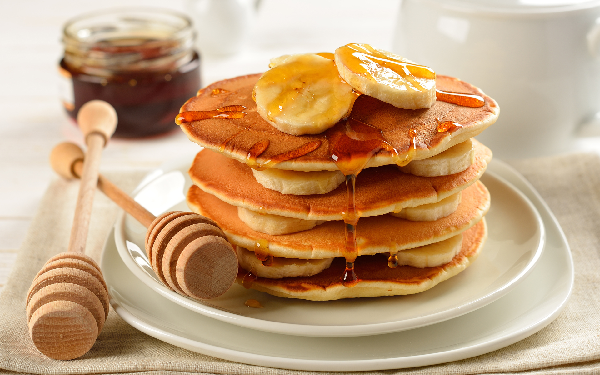
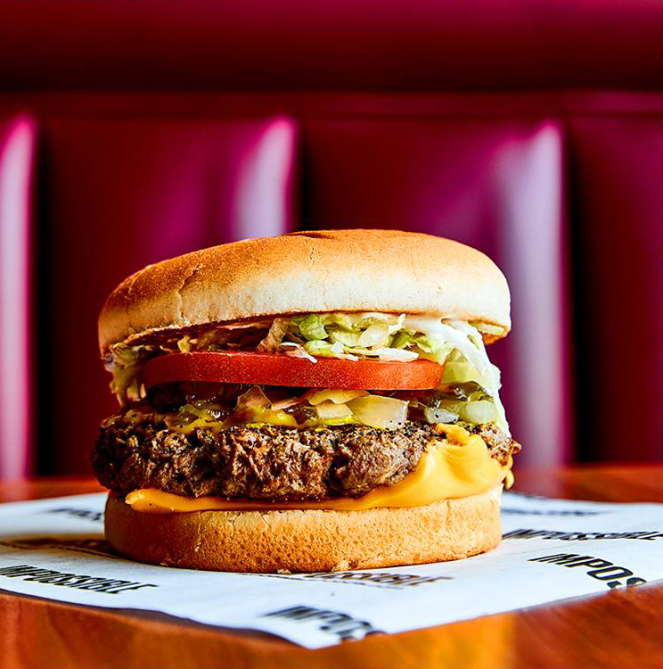
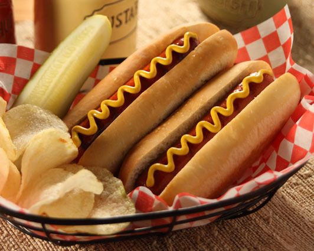
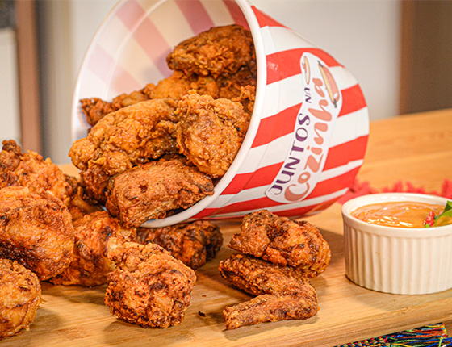
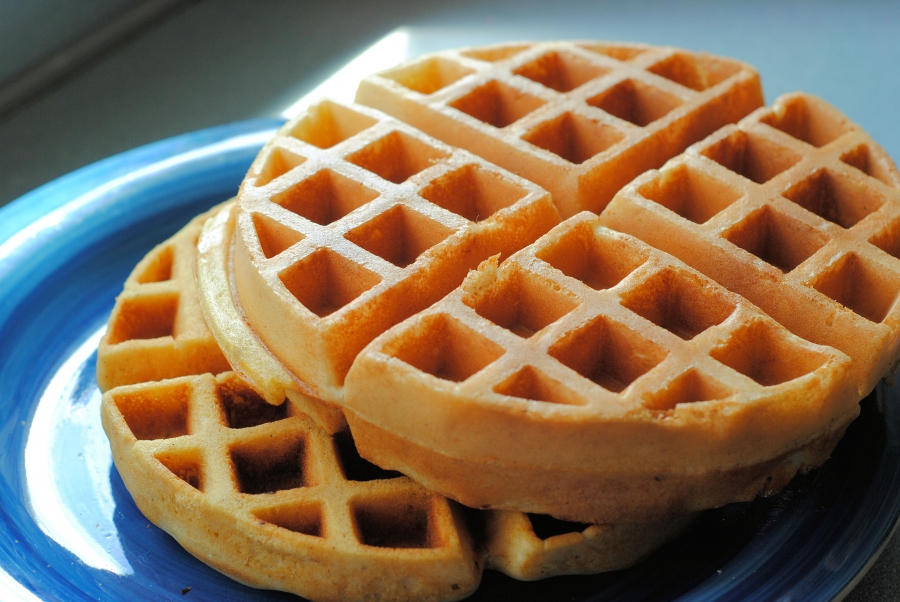

Panqueca

Ingredientes
- 1 e 1/4 xícara (chá) de farinha de trigo
- 1 colher (sopa) de açúcar
- 3 colheres (chá) de fermento em pó
- 2 ovos levemente batidos
- 1 xícara (chá) de leite
- 2 colheres (sopa) de manteiga derretida
- pitada de sal
- óleo
Modo de preparo
- Misture em um recipiente: a farinha, o açúcar, o fermento e o sal.
- Em outro recipiente, misture os ovos, o leite e a manteiga.
- Acrescente os líquidos aos secos, sem misturar em excesso.
- O ponto da massa não deve ser muito líquido, deve escorrer lentamente.
- Aqueça e unte a frigideira com óleo, coloque a massa no centro, cerca de 1/4 xícara por panqueca.
- Vire a massa para assar do outro lado e está pronto!
Hambúrguer

Ingredientes
- 1 kg de carne moída de primeira
- 100 g de bacon
- 3 cebolas grandes
- 1 vidro pequeno de champignon
- 100 g de mussarela
- 100 g de presunto
Modo de preparo
- Pique o bacon em cubinhos pequenos.
- Pique os champignons em pedaços pequenos, separe a água
- Pique as cebolas em pedaços bem pequenos ou passe no processador, divida em duas partes.
- Frite metade da cebola picada até dourar com óleo, bacon e os champignons.
- Tempere com sal e alho suficiente para 1 kg de carne moída.
- Misture o óleo do bacon, bacon, cebolas fritas e champignons com a carne moída, junte a água do champignons e a metade de cebola crua.
- Faça bolinhas com a carne com cerca de 5 cm de diâmetro.
- Abra as bolinhas em um pires deixando ultrapassar as suas bordas.
- Recheie com meia 1/2 de queijo e 1/2 de presunto dobradas.
- Feche o hambúrguer e frite em frigideira ou asse em grelha
Hot-dog

Ingredientes
- 1 a 2 salsichas
- 1/2 cebola cortada em rodelas
- 1 colher de sopa de margarina
- 1 pão de hot dog
- 1 pote de ketchup
- 1 pote de maionese
Modo de preparo
- Encha uma panela com água e cozinhe as salsichas inteiras
- Escorra as salsichas e reserve
- Em uma frigideira, doure a cebola na margarina
- Acrescente as salsichas na frigideira
- Abra o pão de hot dog e coloque as salsichas dentro
- Passe o ketchup e a maionese por cima
Frango frito

Ingredientes
- 6 coxas e 6 sobrecoxas de frango
- 3 dentes de alho
- Suco de 2 limões
- Sal a gosto
- Pimenta a gosto
- Azeite de oliva
- 1 ovo
- 1 xícara de leite
- 1 xícara de água
- Farinha de trigo
Modo de preparo
- Tempere a carne com o alho, o suco de limão, 1 pitada de sal e 1 pitada de pimenta, deixe a carne marinando por 30 minutos.
- Misture o leite, a água e o ovo em uma bacia.
- Coloque o frango na bacia para "nadar" na mistura.
- Depois de passar a carne pela mistura, vamos empanar.
- Para empanar o frango, coloque a farinha em um saco plástico, com mais uma pitada de sal e pimenta.
- Depois coloque os pedaços de frango no saco plástico e mexa bem, para que a farinha "agarre" no frango.
- Coloque bastante óleo em uma panela.
- Quando o óleo estiver bem quente, mergulhe algumas partes do frango.
- Deixe o frango fritar por uns 5 minutos, mexa e vire.
- Escorrer e servir.
Waffles

Ingredientes
- 1 xícara de chá de farinha de trigo
- 1 colher de chá de fermento em pó
- 1/2 colher chá de sal
- 1 colher de sopa de manteiga derretida
- 1 colher de chá de açúcar
- 1 xícara de chá de leite
- 1 gema e 1 clara
Modo de preparo
- Peneire todos os ingredientes secos
- Acrescente a gema, o leite, a manteiga derretida aos ingredientes secos e misture-os bem
- Junte a clara batida em neve, incorporando delicadamente
- Despeje aproximadamente 1/2 xícara de chá de massa na forma de Waffle quente
- Quando perceber que esta dourado esta pronto